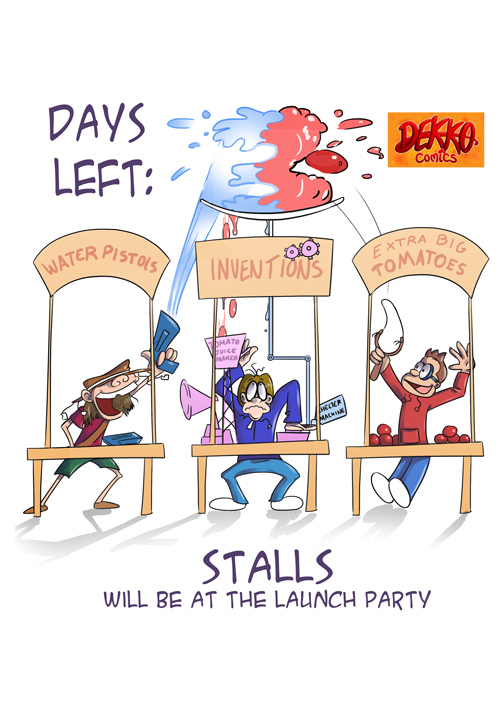

Okay my last post was stupid but in that post I said the next one would be serious and I’m sticking to it!!!
Right, in this post I want to talk a bit about Dekko Comics and their launch party and how I am involved with the company. So Dekko Comics is a comic book aimed at children as an alternative way to help them learn. The creator of Dekko is a man called Rossie Stone.
Alright now that you know what Dekko is, I will start from the beginning and explain how I met Rossie. A few months ago I was at spring Rai-con, I had a stall and I was selling my comic book Mystery Club, Rossie was also at Rai-con, to be honest I’m not sure is he was selling his book there or not (I can’t remember). Anyway, at one point during the convention I was away, ( probably eating…eating marshmallows…. WHAT?!! THEY WERE SELLING GOURMET MARSHMALLOWS HOW WAS I MEANT TO RESIST?!!!! ) And my mum was keeping an eye on my stall ’cause I do not have employees…
So when my mum was watching my stall I think Rossie came up to the stall and said he would come back later and buy my comic. Later on when I came back my mum told me but we didn’t actually think he would be back, but he was!
He bought all 4 of my books (I only had 4 books out at the time) Mystery Club Festival, Mystery Club Invisible Ink, Mystery club The Spy and Mystery Club Meet Miss ROCK! I think he gave me his business card and I happened to have forgot to bring any business cards so I just gave him my email address…..
A few weeks later we meet up for coffee, well I had tea ’cause tea’s better, AM I RIGHT?!! We spoke about my comic and how I got started which is a subject I may want to speak about in another post. What I didn’t exactly realise though was that this was a sort of job interview! At the end he asked me if I would like to possibly work for Dekko.
Before working for Dekko there are 3 stages, the 1st is copying pictures of Dekko characters, the 2nd is coming up with poses for the characters and drawing that and the 3rd is drawing some Dekko comic strips. Right now I am actually still on the 1st step but I am close to moving on to step 2 so I am not officially working for them now but hopefully I soon will be!
As I said, I am not officially working for them at the moment, but I was still invited to the launch party for their 3rd volume and was given a stall to sell my books at!! It was a very fun night and I also met some of the other Dekko artists, listened to some very wonderful, inspirational talks, and sold out all my comics!!!
There should hopefully be some videos and photos from the night on Dekkos Facebook soon if you are interested so hopefully you can check that out!!
Phew! That was a lot of writing! Alrighty~ see ya in ma next post (hopefully…)
Amy